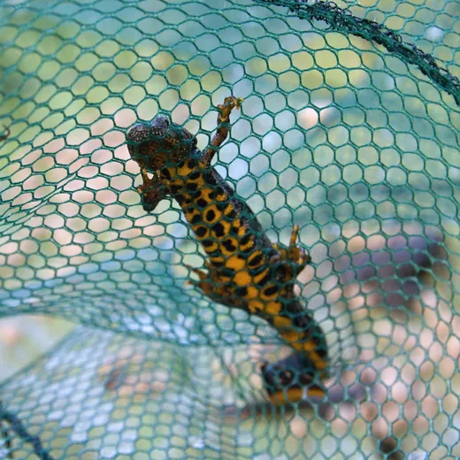
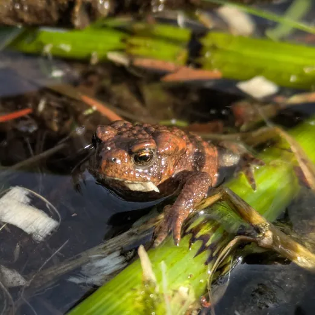
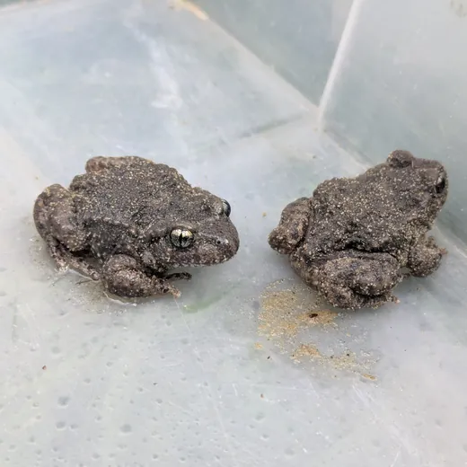
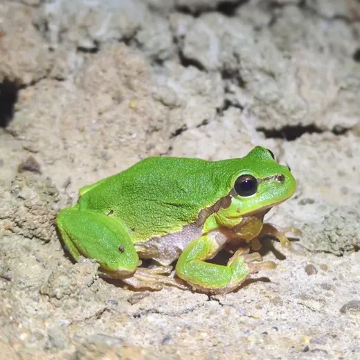
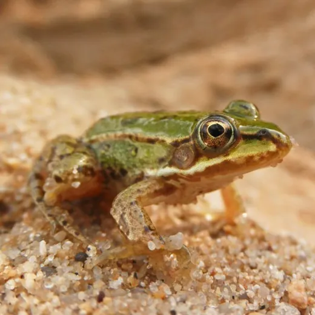
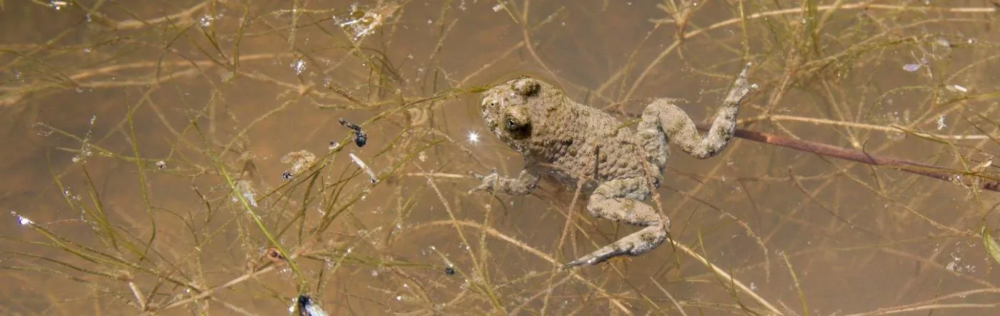
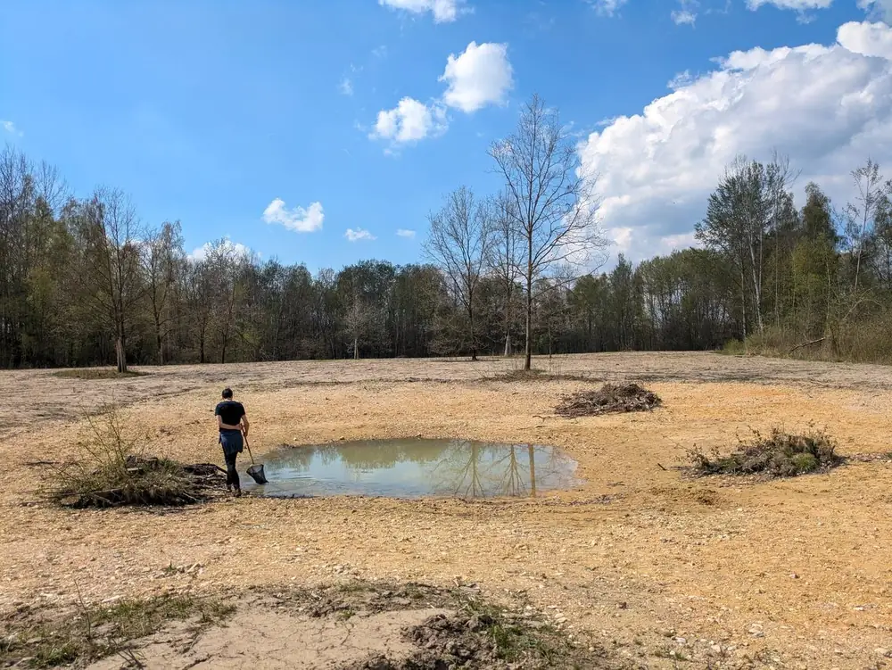

A pond’s amphibian community is the set of species that breed in it, how many of them there are, and how that changes from year to year. Ponds hold up to 70 % of the freshwater species in European landscapes, but they are small, numerous and scattered, so most monitoring schemes pass them by. And a survey that misses a species does not show that it is absent: whether we call a population stable or declining depends on how reliably each method finds it, and at what cost.
My PhD asks how well we can see these communities, and what the Czech monitoring data already say about them. Its field data come from BiodivPond, the European pond monitoring pilot I coordinate, where the same ponds are surveyed by several methods on the same dates.
Registered thesis topic: Monitoring methods for amphibian species of European importance in small water bodies and the assessment of their population status in the Czech Natura 2000 network
Three questions
-
Methods
How well do environmental DNA and passive acoustic monitoring find a pond's amphibians, compared with traps, nets and night counts at the same pond on the same date?
-
Status
How are the amphibians of European importance doing in the Czech Natura 2000 network after seven years of standardised monitoring, and do ponds created for amphibians work?
-
Ponds
What shapes amphibian communities across Europe: the water, its vegetation and fish, or the land around the pond?
Who lives in a pond
Five of the species I meet in Czech ponds. Each method sees this community differently: a trap holds whatever swims into it overnight, a recorder hears only the species that call, and eDNA finds the species that have left DNA in the water.

Great crested newt Triturus cristatusAnnex II
Common toad Bufo bufo
Common spadefoot Pelobates fuscus
European tree frog Hyla arborea
Water frog Pelophylax sp.
One pond, three ways of looking
BiodivPond surveys the same core ponds with three kinds of method. Comparing what each finds, pond by pond and date by date, is the core of the methods question.
Traditional
Umbrella traps
The standard. Hexagonal mesh traps stand among vegetation 0.5–1.5 m from the shore and 25–50 cm deep, from sunset to sunrise. An air-filled bottle keeps the top above water, so nothing drowns.
- Records
- Species, life stage and sex, and the belly pattern of each crested newt, so an animal can be recognised when it is caught again.
- Limit
- One night with six traps detects the great crested newt only about 40 % of the time (Kröpfli et al. 2010).
Novel
Environmental DNA
Water from several points around the pond, pooled into one sample and filtered on site, then analysed at the pilot's eDNA hub at INBO in Belgium. Metabarcoding lists many species from one sample, fish and invertebrates included; a targeted ddPCR assay looks for crested newts alone.
- Records
- Which species are present, including rare and hidden ones, in data comparable across many ponds.
- Limit
- Not how many animals or which life stages, and nothing for species missing from the reference library.
Novel
Passive acoustic monitoring
A recorder at the pond, at 47 of the 60 core ponds in 2026. The processing builds on the pipeline of the Biodiversa+ automated monitoring pilot, which recognises birds and bats.
- Records
- Calling frogs and toads (water frogs, tree frogs, fire-bellied toads) and bats.
- Limit
- Newts do not call, and amphibian calls are a step the existing pipeline does not yet cover. A first pass at adding them is part of this project.
The comparison. At each pond and date, the species found by eDNA are compared with those caught in traps, and the crested newt ddPCR results with the trap counts.
The data
Three datasets, one European and two Czech, each answering a different part of the questions.
Europe BiodivPond
60
core ponds sampled in 2026
eDNA at all 60, traditional surveys at 48, acoustic recorders at 47. In 2027 citizen scientists sample another 500 ponds for eDNA.
Czechia Natura 2000 monitoring
6
Annex II species, 2020–2025
Counts, abundance classes and habitat records from 1,589 sites.
Czechia Created ponds
172
ponds created or restored for amphibians, 2009–2025
The Agency's Pond Restoration Effectiveness Monitoring of subsidised ponds: 572 site-years and 1,685 visits, recording every species and life stage, and the pond itself: depth, shading, vegetation and fish.
Analyses under way
Work in progress. Results will follow in publications.

Natura 2000 sites, 2020–2025
- Population trends of the six Annex II species, from counts and abundance classes, and how robust they are to the choice of estimator and of sites.
- Apparent local losses: how many are real, and how many are populations that simply went undetected in one season.
Created and restored ponds, 2009–2025
- Trends of single species and of species richness across the monitored ponds.
- Colonisation: how quickly new ponds gain their species, and what role management plays.
A manuscript is planned for mid‑2027.

What comes next
-
- Natura 2000 trends and their drivers: habitat, land cover, drought
- The created-ponds manuscript, by mid‑2027
- The BiodivPond core pond dataset, on GBIF and Zenodo
- eDNA against traditional surveys: the same species at the same pond and date?
- Crested newt ddPCR compared with trap counts
- A first pass at calling frogs and toads in the recordings
- The 2027 citizen-science season, 500 ponds
-
- The methods manuscript: eDNA, acoustic and traditional detection compared
- The inter-laboratory eDNA ring test, as a contributor
- Pond conditions and richness at the core ponds: nutrients, vegetation, land use, and fish from eDNA
- Field and processing time for each method
-
- Natura 2000 drivers: local factors (management, hydrology, fish) against the landscape (land cover, land use, connectivity)
- Ponds across Europe: land cover and fish across 560 core and citizen-science ponds
Where it connects
- Biodiversa+ pilot · I coordinate it BiodivPond The field backbone: core ponds, eDNA, acoustic recorders and the citizen-science scheme.
-
TA ČR · 2026 to 2028 eDNA4Nature eDNA tools for aquatic biodiversity, led by the Faculty of Environmental Sciences. Its certified methodology is meant for the Agency's monitoring; I represent the Agency as its end user.
- Integrated LIFE project PROSPECTIVE LIFE The recommendations feed the planned action plans for the natterjack toad (Epidalea calamita) and the Carpathian newt.